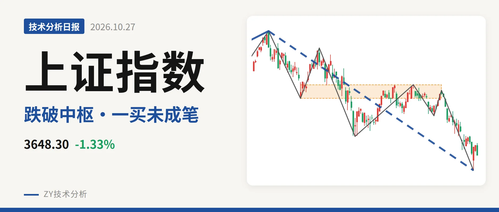
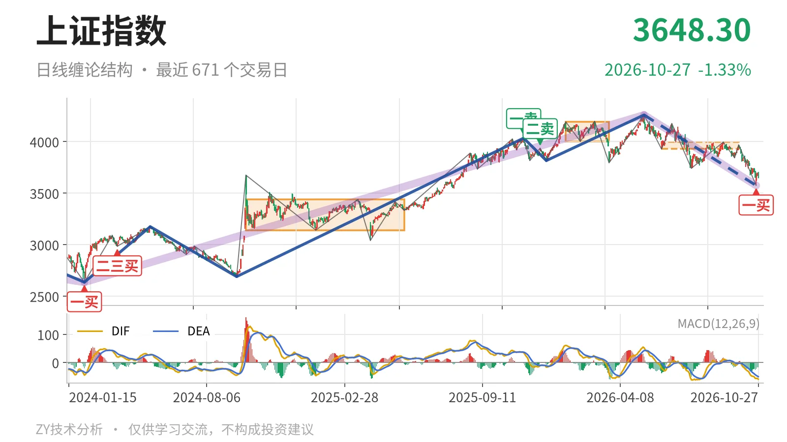
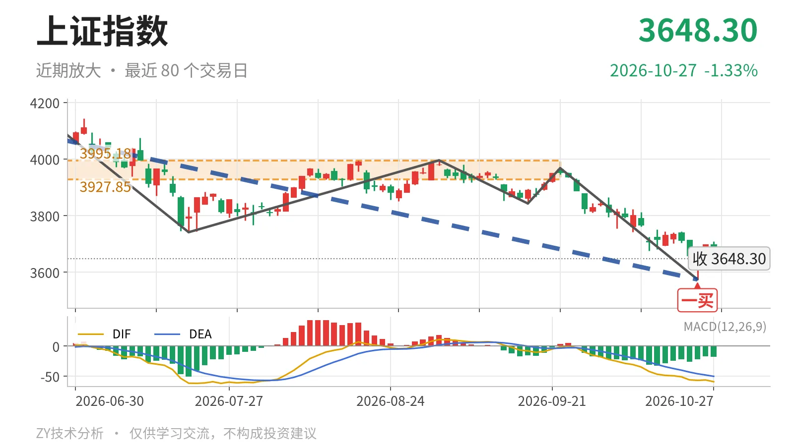

上证指数｜一买反抽未成笔，3928点下沿未收复

最近日线中枢 3927.85—3995.18点，收盘位于中枢之下
一句话：日线一买后反抽未成笔，中枢下沿未收回，结构仍偏弱。
📐 走势结构：大级别上涨未结束，日线回落段延续
当前仍处于2024年2月5日至2026年5月14日上涨段里的回落段，而非新一轮上涨。该上涨段从2635.09点到4258.86点，上涨约61.6%，还没结束；5月14日至10月23日的日线下跌线段从4258.86点到3574.27点，跌16.1%，仍在延续。这个日线线段内含7笔，10月23日之后只有两K线反抽，未成笔，下跌线段没有结束。

📊 中枢与位置：跌破最近中枢下沿，中枢下移
最新收盘3648.30点已跌破最近日线笔中枢下沿。该中枢为6月8日至9月22日的3927.85—3995.18点，尚未完成，中轴3961.51点；当前点位低于下沿约279.55点，幅度7.1%。与1月14日至3月23日中枢4002.78—4190.87点相比，最近中枢明显下移。
🔍 买卖点：10月23日一买出现，反抽未成笔
日线笔级别一买出现在10月23日3574.27点，所在9月22日至10月23日下跌笔已经结束。更早的2025年11月14日一卖4034.08点与2025年12月8日二卖3936.31点一个比一个低，框住高位压力。10月26日至10月27日只有2根K线，最高3708.20点、最低3648.30点，收于3648.30点；这个反抽未成笔，也未能回到3927.85点上方。

📉 背驰：绿柱未同步缩小，一买力度一般
9月22日至10月23日下跌笔与6月23日至7月20日下跌笔相比，不是标准背驰。价格从3967.68点跌到3574.27点，低于前低3741.11点，但绿柱面积347大于前一组289；DIF低点从前一组-61.8抬到-57.1，只出现DIF低点抬高，绿柱面积没有同步缩小。最新DIF-59.3又低于10月23日的DIF低点，仍在零轴下方，说明一买后的反抽尚未扭转日线弱势。
🧭 关键位置观察：反抽看3928点附近
结构上，先看反抽对3928点附近的态度。若反抽回不到3928点附近，价格离开中枢后的第一次回抽失败，结构上构成三卖，5月14日以来的日线下跌线段还有延续条件。若重新站上3928点附近，10月23日以来的低点更可能只是中枢扩展，而不是形成三卖。下方若跌破3574.27点，则10月23日一买只对应较小级别，5月14日以来的日线下跌线段继续。整体看，弱在反抽未成笔、收在中枢下方、背驰不标准；反抽未回到3928点附近前，结构偏弱。
⚠️ 本文为基于公开行情数据的缠论技术结构记录，由程序自动计算并生成，仅供学习交流，不构成任何投资建议。市场有风险，投资需谨慎。